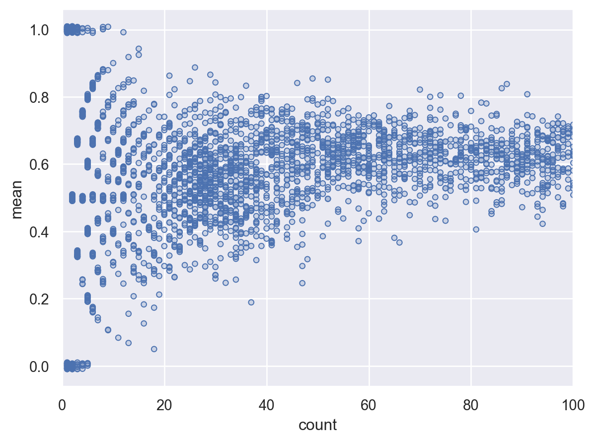

Load Packages
# numerical calculation & data frames
import numpy as np
import pandas as pd
# visualization
import matplotlib.pyplot as plt
import seaborn as sns
import seaborn.objects as so
# statistics
import statsmodels.api as smR for Data Science by Wickham & Grolemund
# numerical calculation & data frames
import numpy as np
import pandas as pd
# visualization
import matplotlib.pyplot as plt
import seaborn as sns
import seaborn.objects as so
# statistics
import statsmodels.api as sm# pandas options
pd.set_option("mode.copy_on_write", True)
pd.options.display.precision = 2
pd.options.display.float_format = '{:.2f}'.format # pd.reset_option('display.float_format')
pd.options.display.max_rows = 7
# Numpy options
np.set_printoptions(precision = 2, suppress=True)# 1. Had an arrival delay of two or more hours
# Load the nycflight13 dataset
flights = sm.datasets.get_rdataset("flights", "nycflights13").data.drop(columns="time_hour")flights.query('arr_delay > 120').head(3) year month day dep_time sched_dep_time dep_delay arr_time
119 2013 1 1 811.00 630 101.00 1047.00 \
151 2013 1 1 848.00 1835 853.00 1001.00
218 2013 1 1 957.00 733 144.00 1056.00
sched_arr_time arr_delay carrier flight tailnum origin dest air_time
119 830 137.00 MQ 4576 N531MQ LGA CLT 118.00 \
151 1950 851.00 MQ 3944 N942MQ JFK BWI 41.00
218 853 123.00 UA 856 N534UA EWR BOS 37.00
distance hour minute
119 544 6 30
151 184 18 35
218 200 7 33 # 2. Flew to Houston (IAH or HOU)
flights.query('dest == "IAH" | dest == "HOU"').head(3) year month day dep_time sched_dep_time dep_delay arr_time
0 2013 1 1 517.00 515 2.00 830.00 \
1 2013 1 1 533.00 529 4.00 850.00
32 2013 1 1 623.00 627 -4.00 933.00
sched_arr_time arr_delay carrier flight tailnum origin dest air_time
0 819 11.00 UA 1545 N14228 EWR IAH 227.00 \
1 830 20.00 UA 1714 N24211 LGA IAH 227.00
32 932 1.00 UA 496 N459UA LGA IAH 229.00
distance hour minute
0 1400 5 15
1 1416 5 29
32 1416 6 27 # 3. Departed in summer (July, August, and September)
flights.query('month in [7, 8, 9]').head(3) year month day dep_time sched_dep_time dep_delay arr_time
250450 2013 7 1 1.00 2029 212.00 236.00 \
250451 2013 7 1 2.00 2359 3.00 344.00
250452 2013 7 1 29.00 2245 104.00 151.00
sched_arr_time arr_delay carrier flight tailnum origin dest
250450 2359 157.00 B6 915 N653JB JFK SFO \
250451 344 0.00 B6 1503 N805JB JFK SJU
250452 1 110.00 B6 234 N348JB JFK BTV
air_time distance hour minute
250450 315.00 2586 20 29
250451 200.00 1598 23 59
250452 66.00 266 22 45 # 4. Arrived more than two hours late, but didn’t leave late
flights.query('arr_delay > 120 & dep_delay <= 0').head(3) year month day dep_time sched_dep_time dep_delay arr_time
22911 2013 1 27 1419.00 1420 -1.00 1754.00 \
33011 2013 10 7 1350.00 1350 0.00 1736.00
33019 2013 10 7 1357.00 1359 -2.00 1858.00
sched_arr_time arr_delay carrier flight tailnum origin dest
22911 1550 124.00 MQ 3728 N1EAMQ EWR ORD \
33011 1526 130.00 EV 5181 N611QX LGA MSN
33019 1654 124.00 AA 1151 N3CMAA LGA DFW
air_time distance hour minute
22911 135.00 719 14 20
33011 117.00 812 13 50
33019 192.00 1389 13 59 # 5. Were delayed by at least an hour, but made up over 30 minutes in flight
flights.query('dep_delay > 60 & arr_delay - dep_delay < -30').head(5) year month day dep_time sched_dep_time dep_delay arr_time
815 2013 1 1 2205.00 1720 285.00 46.00 \
832 2013 1 1 2326.00 2130 116.00 131.00
2286 2013 1 3 1503.00 1221 162.00 1803.00
2508 2013 1 3 1839.00 1700 99.00 2056.00
2522 2013 1 3 1850.00 1745 65.00 2148.00
sched_arr_time arr_delay carrier flight tailnum origin dest air_time
815 2040 246.00 AA 1999 N5DNAA EWR MIA 146.00 \
832 18 73.00 B6 199 N594JB JFK LAS 290.00
2286 1555 128.00 UA 551 N835UA EWR SFO 320.00
2508 1950 66.00 AA 575 N631AA JFK EGE 239.00
2522 2120 28.00 AA 177 N332AA JFK SFO 314.00
distance hour minute
815 1085 17 20
832 2248 21 30
2286 2565 12 21
2508 1747 17 0
2522 2586 17 45 # 6. Departed between midnight and 6am (inclusive)
flights.query('dep_time >= 0 & dep_time <= 600').head(3) year month day dep_time sched_dep_time dep_delay arr_time
0 2013 1 1 517.00 515 2.00 830.00 \
1 2013 1 1 533.00 529 4.00 850.00
2 2013 1 1 542.00 540 2.00 923.00
sched_arr_time arr_delay carrier flight tailnum origin dest air_time
0 819 11.00 UA 1545 N14228 EWR IAH 227.00 \
1 830 20.00 UA 1714 N24211 LGA IAH 227.00
2 850 33.00 AA 1141 N619AA JFK MIA 160.00
distance hour minute
0 1400 5 15
1 1416 5 29
2 1089 5 40 # 7. Find the fastest flights.
(
flights.assign(speed=flights.distance / flights.air_time)
.sort_values(by="speed", ascending=False)
.head(3)
) year month day dep_time sched_dep_time dep_delay arr_time
216447 2013 5 25 1709.00 1700 9.00 1923.00 \
251999 2013 7 2 1558.00 1513 45.00 1745.00
205388 2013 5 13 2040.00 2025 15.00 2225.00
sched_arr_time arr_delay carrier flight tailnum origin dest
216447 1937 -14.00 DL 1499 N666DN LGA ATL \
251999 1719 26.00 EV 4667 N17196 EWR MSP
205388 2226 -1.00 EV 4292 N14568 EWR GSP
air_time distance hour minute speed
216447 65.00 762 17 0 11.72
251999 93.00 1008 15 13 10.84
205388 55.00 594 20 25 10.80 # 8. Sort flights to find the most delayed flights. Find the flights that left earliest.
flights.sort_values(by="dep_delay", ascending=False).head(3) year month day dep_time sched_dep_time dep_delay arr_time
7072 2013 1 9 641.00 900 1301.00 1242.00 \
235778 2013 6 15 1432.00 1935 1137.00 1607.00
8239 2013 1 10 1121.00 1635 1126.00 1239.00
sched_arr_time arr_delay carrier flight tailnum origin dest
7072 1530 1272.00 HA 51 N384HA JFK HNL \
235778 2120 1127.00 MQ 3535 N504MQ JFK CMH
8239 1810 1109.00 MQ 3695 N517MQ EWR ORD
air_time distance hour minute
7072 640.00 4983 9 0
235778 74.00 483 19 35
8239 111.00 719 16 35 flights.sort_values(by="dep_time", ascending=True).head(3) year month day dep_time sched_dep_time dep_delay arr_time
250450 2013 7 1 1.00 2029 212.00 236.00 \
109552 2013 12 30 1.00 2359 2.00 441.00
240026 2013 6 20 1.00 2359 2.00 340.00
sched_arr_time arr_delay carrier flight tailnum origin dest
250450 2359 157.00 B6 915 N653JB JFK SFO \
109552 437 4.00 B6 839 N508JB JFK BQN
240026 350 -10.00 B6 745 N517JB JFK PSE
air_time distance hour minute
250450 315.00 2586 20 29
109552 198.00 1576 23 59
240026 196.00 1617 23 59 # 9. Which flights travelled the farthest?
flights.sort_values(by="distance", ascending=False).head(3) year month day dep_time sched_dep_time dep_delay arr_time
50676 2013 10 26 1004.00 1000 4.00 1435.00 \
108078 2013 12 28 933.00 930 3.00 1520.00
100067 2013 12 19 924.00 930 -6.00 1450.00
sched_arr_time arr_delay carrier flight tailnum origin dest
50676 1450 -15.00 HA 51 N386HA JFK HNL \
108078 1535 -15.00 HA 51 N384HA JFK HNL
100067 1535 -45.00 HA 51 N386HA JFK HNL
air_time distance hour minute
50676 608.00 4983 10 0
108078 633.00 4983 9 30
100067 609.00 4983 9 30 # Which travelled the shortest?
flights.sort_values(by="distance", ascending=True).head(3) year month day dep_time sched_dep_time dep_delay arr_time
275945 2013 7 27 NaN 106 NaN NaN \
3083 2013 1 4 1240.00 1200 40.00 1333.00
16328 2013 1 19 1617.00 1617 0.00 1722.00
sched_arr_time arr_delay carrier flight tailnum origin dest
275945 245 NaN US 1632 NaN EWR LGA \
3083 1306 27.00 EV 4193 N14972 EWR PHL
16328 1722 0.00 EV 4616 N12540 EWR PHL
air_time distance hour minute
275945 NaN 17 1 6
3083 30.00 80 12 0
16328 34.00 80 16 17 # 10. 각 도착지로 출항하는 항공편이 1년 중 몇 일 있는가?
flights.groupby("dest").size()dest
ABQ 254
ACK 265
ALB 439
...
TVC 101
TYS 631
XNA 1036
Length: 105, dtype: int64# 11. 1년 중 300일 이상 출항하는 도착지들을 구하면?
flights.groupby("dest").size().reset_index(name="count").query('count >= 300')
# 또는
flights.value_counts("dest").reset_index().query('count >= 300') dest count
0 ORD 17283
1 ATL 17215
2 LAX 16174
.. ... ...
79 SJC 329
80 TUL 315
81 OAK 312
[82 rows x 2 columns]# 1. Our definition of cancelled flights (dep_delay or arr_delay is missing) is slightly suboptimal. Why? Which is the most important column?
#예를 들어, 출발지연은 missing이 아니나 도착지연은 missing인 것이 있음
flights.query('dep_delay.isna() & ~arr_delay.isna()')[["dep_time", "arr_time", "dep_delay", "arr_delay"]]Empty DataFrame
Columns: [dep_time, arr_time, dep_delay, arr_delay]
Index: []flights.query('~dep_delay.isna() & arr_delay.isna()')[["dep_time", "arr_time", "dep_delay", "arr_delay"]] dep_time arr_time dep_delay arr_delay
471 1525.00 1934.00 -5.00 NaN
477 1528.00 2002.00 29.00 NaN
615 1740.00 2158.00 -5.00 NaN
... ... ... ... ...
334495 1214.00 1801.00 -11.00 NaN
335534 1734.00 2159.00 23.00 NaN
335805 559.00 NaN -1.00 NaN
[1175 rows x 4 columns]출발지연이 misssing이면 도착지연도 missing 출발지연은 missing이 아니나 도작지연은 missing인 것이 있음: 어떤 뜻인가? 따라서 arr_delay(도착지연)가 missing인 것이 결항된 항공편이라고 볼 수 없음 실제로는 도착지연이 더 중요한 지표임, 연결된 항공편을 놓칠 수 있기 때문에. 출발지연은 오히려 좋을 수도..
# 2. Look at the number of cancelled flights per day. Is there a pattern? Is the proportion of cancelled flights related to the (daily) average delay?
# 취소되는 항공편들이 많은 것과 관계 있는 것은 무엇이 있을까…# 출항한 항공편이 많을수록 결항편도 많음.. 당연? 선형관계? >> 결항 비율로
cancelled_per_day = (
flights.assign(
cancelled = lambda x: x.dep_delay.isna() | x.arr_delay.isna())
.groupby(["month", "day"])["cancelled"]
.agg(["sum", "count"])
)
cancelled_per_day.head(3) sum count
month day
1 1 11 842
2 15 943
3 14 914(
so.Plot(cancelled_per_day.query('sum < 300'), x='count', y='sum')
.add(so.Dots())
.add(so.Line(), so.PolyFit(5))
)
# 지연된 항공기가 많을수록 결항비율도 큰가? 지연된 비행기가 많으면 뒤에 출발하는 항공편은 결항...
def get_delayed_positive(g):
return pd.Series([
g["cancelled"].mean(),
g.query('dep_delay > 0')["dep_delay"].mean(),
g.query('arr_delay > 0')["arr_delay"].mean(),
], index=["cancelled_prop", "avg_dep_delay", "avg_arr_delay"])
cancelled_and_delays = (
flights.assign(
cancelled = lambda x: x.dep_delay.isna() | x.arr_delay.isna())
.groupby(["month", "day"])
.apply(get_delayed_positive)
)
cancelled_and_delays cancelled_prop avg_dep_delay avg_arr_delay
month day
1 1 0.01 32.66 32.48
2 0.02 32.63 32.03
3 0.02 28.50 27.66
... ... ... ...
12 29 0.02 42.81 47.26
30 0.02 29.91 31.24
31 0.02 26.27 24.46
[365 rows x 3 columns](
so.Plot(cancelled_and_delays.query('cancelled_prop < .3'), x='avg_dep_delay', y='cancelled_prop')
.add(so.Dots())
.add(so.Line(), so.PolyFit(5))
)
(
so.Plot(cancelled_and_delays.query('cancelled_prop < .3'), x='avg_arr_delay', y='cancelled_prop')
.add(so.Dots())
.add(so.Line(), so.PolyFit(5))
)# 3. What time of day should you fly if you want to avoid delays as much as possible?
# 도착지연이 가장 적은 시간대는 언제인가?
flights.groupby("sched_dep_time")["arr_delay"].mean().reset_index().sort_values(by="arr_delay", ascending=True).head(7) sched_dep_time arr_delay
102 712 -35.35
56 626 -30.00
3 505 -26.50
992 2208 -26.00
6 516 -25.75
26 555 -25.00
27 557 -23.67# minus delay는 제외하고 도착지연의 평균을 구한다면,
(
flights.groupby(["sched_dep_time"])[["arr_delay"]]
.apply(lambda x: x.query('arr_delay > 0').mean())
.sort_values(by="arr_delay", ascending=True)
.head(7)
) arr_delay
sched_dep_time
2133 1.00
712 2.00
534 3.00
1958 4.00
616 6.67
919 6.73
548 6.78def get_delayed_positive(g):
return pd.Series([
g.query('arr_delay > 0')["arr_delay"].median(),
g.query('arr_delay > 0')["arr_delay"].count(),
g["arr_delay"].count()
], index=["avg_arr_delay", "n", "n_total"])
time_delay = flights.groupby(["sched_dep_time"]).apply(get_delayed_positive).fillna(0).reset_index()
time_delay sched_dep_time avg_arr_delay n n_total
0 106 0.00 0.00 0.00
1 500 7.00 73.00 340.00
2 501 0.00 0.00 1.00
... ... ... ... ...
1018 2355 12.00 36.00 73.00
1019 2358 18.00 29.00 44.00
1020 2359 18.00 413.00 810.00
[1021 rows x 4 columns]# 시각화해서 살펴보면,
(
so.Plot(time_delay, x='sched_dep_time', y='avg_arr_delay')
.add(so.Dots())
.add(so.Line(), so.PolyFit(5))
)
# 이상치들은 샘플수가 작은가?
time_delay.sort_values(by="avg_arr_delay", ascending=False).head(5) sched_dep_time avg_arr_delay n n_total
128 738 126.00 2.00 15.00
404 1214 99.00 6.00 52.00
28 558 91.50 2.00 3.00
991 2207 84.00 3.00 3.00
762 1812 83.00 7.00 14.00# 4. For each destination, compute the total minutes of delay. For each flight, compute the proportion of the total delay for its destination.# For each destination, compute the total minutes of delay.
total_delay = flights.groupby("dest")["arr_delay"].sum().reset_index(name="total_delay")
total_delay dest total_delay
0 ABQ 1113.00
1 ACK 1281.00
2 ALB 6018.00
.. ... ...
102 TVC 1232.00
103 TYS 13912.00
104 XNA 7406.00
[105 rows x 2 columns]# For each flight, compute the proportion of the total delay for its destination.
# Merge를 이용하면,
(
flights.merge(total_delay, on="dest")
.assign(prop_delay = lambda x: x.arr_delay / x.total_delay)
.sort_values(["year", "month", "day", "hour", "minute"])
.head(3)
) year month day dep_time sched_dep_time dep_delay arr_time
0 2013 1 1 517.00 515 2.00 830.00 \
1 2013 1 1 533.00 529 4.00 850.00
7198 2013 1 1 542.00 540 2.00 923.00
sched_arr_time arr_delay carrier flight tailnum origin dest air_time
0 819 11.00 UA 1545 N14228 EWR IAH 227.00 \
1 830 20.00 UA 1714 N24211 LGA IAH 227.00
7198 850 33.00 AA 1141 N619AA JFK MIA 160.00
distance hour minute total_delay prop_delay
0 1400 5 15 30046.00 0.00
1 1416 5 29 30046.00 0.00
7198 1089 5 40 3467.00 0.01 # transform을 이용하면,
flights["total_delay"] = flights.groupby("dest")["arr_delay"].transform("sum")
flights.head(3) year month day dep_time sched_dep_time dep_delay arr_time
0 2013 1 1 517.00 515 2.00 830.00 \
1 2013 1 1 533.00 529 4.00 850.00
2 2013 1 1 542.00 540 2.00 923.00
sched_arr_time arr_delay carrier flight tailnum origin dest air_time
0 819 11.00 UA 1545 N14228 EWR IAH 227.00 \
1 830 20.00 UA 1714 N24211 LGA IAH 227.00
2 850 33.00 AA 1141 N619AA JFK MIA 160.00
distance hour minute total_delay
0 1400 5 15 30046.00
1 1416 5 29 30046.00
2 1089 5 40 3467.00 flights.assign(prop_delay = lambda x: x.arr_delay / x.total_delay).head(3) year month day dep_time sched_dep_time dep_delay arr_time
0 2013 1 1 517.00 515 2.00 830.00 \
1 2013 1 1 533.00 529 4.00 850.00
2 2013 1 1 542.00 540 2.00 923.00
sched_arr_time arr_delay carrier flight tailnum origin dest air_time
0 819 11.00 UA 1545 N14228 EWR IAH 227.00 \
1 830 20.00 UA 1714 N24211 LGA IAH 227.00
2 850 33.00 AA 1141 N619AA JFK MIA 160.00
distance hour minute total_delay prop_delay
0 1400 5 15 30046.00 0.00
1 1416 5 29 30046.00 0.00
2 1089 5 40 3467.00 0.01 # 5. Find all destinations that are flown by at least two carriers. Use that information to rank the carriers.
flights.groupby("dest")["carrier"].nunique()dest
ABQ 1
ACK 1
ALB 1
..
TVC 2
TYS 2
XNA 2
Name: carrier, Length: 105, dtype: int64dest_carrier = flights.copy()
dest_carrier["carrier_n"] = flights.groupby("dest")["carrier"].transform("nunique")
dest_carrier = dest_carrier.query('carrier_n >= 2')(
dest_carrier.groupby("carrier")["dest"]
.nunique()
.reset_index(name="n_dest")
.assign(rank = lambda x: x.n_dest.rank(ascending=False))
.sort_values("rank")
) carrier n_dest rank
5 EV 51 1.00
0 9E 48 2.00
11 UA 42 3.00
.. ... ... ...
2 AS 1 15.00
6 F9 1 15.00
8 HA 1 15.00
[16 rows x 3 columns]# 1. Which carrier has the worst arrival delays? Challenge: can you disentangle the effects of bad airports vs. bad carriers? Why/why not?# Total delay by carrier within each origin, dest
arr_delay = flights.groupby(["carrier", "origin", "dest"])["arr_delay"].agg(["mean", "count"]).rename(columns={"mean": "arr_delay", "count": "flights"}).reset_index()
arr_delay carrier origin dest arr_delay flights
0 9E EWR ATL -6.25 4
1 9E EWR CVG 1.40 796
2 9E EWR DTW 2.54 220
.. ... ... ... ... ...
436 YV LGA CLT 12.86 258
437 YV LGA IAD 18.92 278
438 YV LGA PHL -14.38 8
[439 rows x 5 columns]# Total delay within each origin dest
arr_delay_total = arr_delay.groupby(["origin", "dest"])[["arr_delay", "flights"]].sum().reset_index().rename(columns={"arr_delay": "arr_delay_total", "flights": "flights_total"})
arr_delay_total origin dest arr_delay_total flights_total
0 EWR ALB 14.40 418
1 EWR ANC -2.50 8
2 EWR ATL 33.79 4876
.. ... ... ... ...
221 LGA TVC 31.75 73
222 LGA TYS 3.89 265
223 LGA XNA 125.96 709
[224 rows x 4 columns]# using `transform` instead of `merge`
arr_delay[["arr_delay_total", "flights_total"]] = arr_delay.groupby(["origin", "dest"])[["arr_delay", "flights"]].transform("sum")arr_delay carrier origin dest arr_delay flights arr_delay_total flights_total
0 9E EWR ATL -6.25 4 33.79 4876
1 9E EWR CVG 1.40 796 22.60 2513
2 9E EWR DTW 2.54 220 88.35 3009
.. ... ... ... ... ... ... ...
436 YV LGA CLT 12.86 258 45.37 5961
437 YV LGA IAD 18.92 278 30.48 1659
438 YV LGA PHL -14.38 8 -8.32 598
[439 rows x 7 columns]# relative delay: average delay of each carrier - average delay of other carriers
arr_delay_relative = arr_delay.assign(
arr_delay_others_mean = lambda x: (x.arr_delay_total - x.arr_delay) / (x.flights_total - x.flights),
arr_delay_mean = lambda x: x.arr_delay / x.flights,
arr_delay_diff = lambda x: x.arr_delay_mean - x.arr_delay_others_mean
)
arr_delay_relative carrier origin dest arr_delay flights arr_delay_total flights_total \
0 9E EWR ATL -6.25 4 33.79 4876
1 9E EWR CVG 1.40 796 22.60 2513
2 9E EWR DTW 2.54 220 88.35 3009
.. ... ... ... ... ... ... ...
436 YV LGA CLT 12.86 258 45.37 5961
437 YV LGA IAD 18.92 278 30.48 1659
438 YV LGA PHL -14.38 8 -8.32 598
arr_delay_others_mean arr_delay_mean arr_delay_diff
0 0.01 -1.56 -1.57
1 0.01 0.00 -0.01
2 0.03 0.01 -0.02
.. ... ... ...
436 0.01 0.05 0.04
437 0.01 0.07 0.06
438 0.01 -1.80 -1.81
[439 rows x 10 columns]arr_delay_relative.groupby("carrier")["arr_delay_diff"].mean().sort_values(ascending=False)carrier
OO 28.79
EV 5.35
VX 1.83
...
DL -1.72
MQ -5.25
HA NaN
Name: arr_delay_diff, Length: 16, dtype: float64# 2. Which plane (tailnum) has the worst on-time record?
## on-time: 늦게 도착하지 않은 항공편의 횟수로 이해
(
flights[flights["tailnum"].notna()].assign(
on_time = lambda x: x.arr_delay <= 0 & x.arr_time.notna())
.groupby("tailnum")["on_time"]
.agg(["mean", "count"])
.sort_values("mean")
) mean count
tailnum
N768SK 0.0 1
N840MH 0.0 1
N838AW 0.0 2
... ... ...
N357SW 1.0 8
N524AS 1.0 9
N834MH 1.0 1
[4043 rows x 2 columns]# 극히 작은 운항횟수를 가진 비행기가 많음... : 제거
on_time = (
flights[flights["tailnum"].notna()].assign(
on_time = lambda x: x.arr_delay <= 0 & x.arr_time.notna())
.groupby("tailnum")["on_time"]
.agg(["mean", "count"])
.sort_values("mean")
)
(
so.Plot(on_time, x='count', y='mean')
.add(so.Dots(), so.Jitter(y=0.02))
.limit(x=(0, 100))
)
on_time.query('count > 20').nlargest(3, "mean") mean count
tailnum
N382HA 0.88 26
N423AS 0.86 29
N5EJAA 0.86 21## on-time: 도착 delay의 길이로 파악하는 경우
flights.groupby("tailnum")["arr_delay"].agg(["mean", "count"]).query('count > 20').nlargest(3, "mean") mean count
tailnum
N203FR 59.12 41
N645MQ 51.00 24
N956AT 47.65 34# 3. Look at each destination. Can you find flights that are suspiciously fast? (i.e. flights that represent a potential data entry error).flights = flights.assign(
mph = lambda x: x.distance / x.air_time * 60
)(
so.Plot(flights, x='distance')
.add(so.Line(), so.Hist(binwidth=10))
)
# 같은 루트를 비행하는 항공편들 안에서 특이점이라면 의심해 볼만함...
standardized = (
flights.groupby(["origin", "dest"])["air_time"]
.agg([("air_time_mean", "mean"), ("air_time_std", "std"), ("n", "count")])
.reset_index()
)
standardized origin dest air_time_mean air_time_std n
0 EWR ALB 31.79 3.08 418
1 EWR ANC 413.12 14.67 8
2 EWR ATL 111.99 9.99 4876
.. ... ... ... ... ...
221 LGA TVC 94.60 6.49 73
222 LGA TYS 97.82 8.52 265
223 LGA XNA 173.17 15.91 709
[224 rows x 5 columns]def normalize(x):
return (x - x.mean()) / x.std()
standardized_flights = flights.copy()
standardized_flights["air_time_z"] = flights.groupby(["origin", "dest"])["air_time"].transform(normalize)standardized_flights.nlargest(5, "air_time_z") year month day dep_time sched_dep_time dep_delay arr_time
237716 2013 6 17 1652.00 1700 -8.00 1856.00 \
244468 2013 6 24 1932.00 1920 12.00 2228.00
309910 2013 9 1 2237.00 1711 326.00 41.00
230885 2013 6 10 1356.00 1300 56.00 1646.00
248839 2013 6 29 755.00 800 -5.00 1035.00
sched_arr_time arr_delay carrier flight tailnum origin dest
237716 1815 41.00 US 2136 N967UW LGA BOS \
244468 2047 101.00 UA 1703 N37255 EWR BOS
309910 1851 350.00 B6 1516 N346JB JFK SYR
230885 1414 152.00 US 2175 N745VJ LGA DCA
248839 909 86.00 B6 1491 N328JB JFK ACK
air_time distance hour minute mph air_time_z
237716 107.00 184 17 0 103.18 14.78
244468 112.00 200 19 20 107.14 14.56
309910 97.00 209 17 11 129.28 13.87
230885 131.00 214 13 0 98.02 13.52
248839 141.00 199 8 0 84.68 12.17 (
so.Plot(standardized_flights, x='air_time_z')
.add(so.Line(), so.Hist(binwidth=.1))
)pd.options.display.min_rows = 0
pd.options.display.max_rows = 100# 4. Compute the air time of a flight relative to the shortest flight to that destination. Which flights were most delayed in the air?
# 비율의 차이
air_time_delayed = flights.copy()
air_time_delayed["air_time_delayed"] = flights.groupby(["origin", "dest"])["air_time"].transform(lambda x: (x - x.min()) / x.min())
air_time_delayed.sort_values("air_time_delayed", ascending=False).head(3) year month day dep_time sched_dep_time dep_delay arr_time
237716 2013 6 17 1652.00 1700 -8.00 1856.00 \
230885 2013 6 10 1356.00 1300 56.00 1646.00
248839 2013 6 29 755.00 800 -5.00 1035.00
sched_arr_time arr_delay carrier flight tailnum origin dest
237716 1815 41.00 US 2136 N967UW LGA BOS \
230885 1414 152.00 US 2175 N745VJ LGA DCA
248839 909 86.00 B6 1491 N328JB JFK ACK
air_time distance hour minute mph air_time_delayed
237716 107.00 184 17 0 103.18 4.10
230885 131.00 214 13 0 98.02 3.09
248839 141.00 199 8 0 84.68 3.03 # 크기의 차이
air_time_delayed = flights.copy()
air_time_delayed["air_time_delayed"] = flights.groupby(["origin", "dest"])["air_time"].transform(lambda x: x - x.min())
air_time_delayed.sort_values("air_time_delayed", ascending=False).head(3) year month day dep_time sched_dep_time dep_delay arr_time
276578 2013 7 28 1727.00 1730 -3.00 2242.00 \
76185 2013 11 22 1812.00 1815 -3.00 2302.00
24032 2013 1 28 1806.00 1700 66.00 2253.00
sched_arr_time arr_delay carrier flight tailnum origin dest
276578 2110 92.00 DL 841 N703TW JFK SFO \
76185 2146 76.00 DL 426 N178DN JFK LAX
24032 1950 183.00 AA 575 N5DBAA JFK EGE
air_time distance hour minute mph air_time_delayed
276578 490.00 2586 17 30 316.65 189.00
76185 440.00 2475 18 15 337.50 165.00
24032 382.00 1747 17 0 274.40 163.00 # 5. For each plane, count the number of flights before the first delay of greater than 1 hour.
flights_first_delay = flights[flights.arr_delay.notna()][["tailnum", "year", "month", "day", "arr_delay"]].assign(
delay_1h = lambda x: (x.arr_delay > 60)
).sort_values(["tailnum", "year", "month", "day"])
flights_first_delay tailnum year month day arr_delay delay_1h
120316 D942DN 2013 2 11 91.00 True
157233 D942DN 2013 3 23 44.00 False
157799 D942DN 2013 3 24 2.00 False
... ... ... ... ... ... ...
107510 N9EAMQ 2013 12 27 -18.00 False
109161 N9EAMQ 2013 12 29 48.00 False
109420 N9EAMQ 2013 12 29 53.00 False
[327346 rows x 6 columns](
flights_first_delay.groupby("tailnum").apply(lambda x: x.delay_1h.cumsum())
.reset_index(level=0)
.groupby("tailnum")
.apply(lambda x: np.sum(x.delay_1h < 1))
.sort_values(ascending=False)
)tailnum
N717TW 119
N765US 97
N705TW 97
...
N376AA 0
N378AA 0
D942DN 0
Length: 4037, dtype: int64